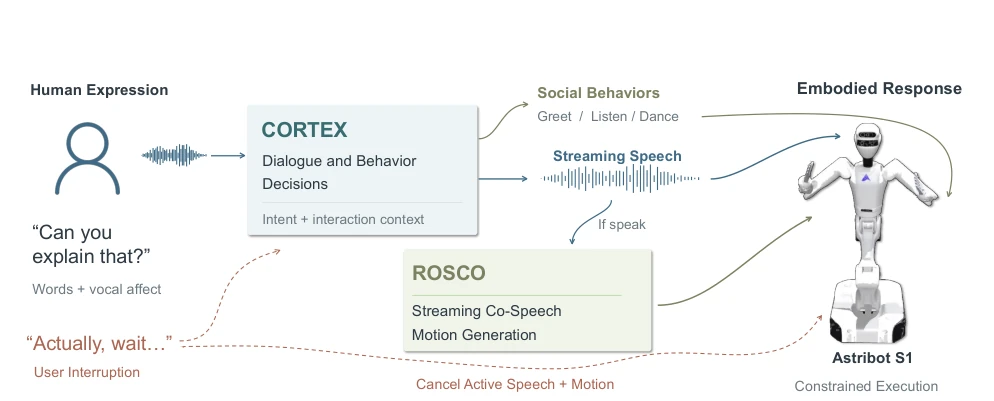
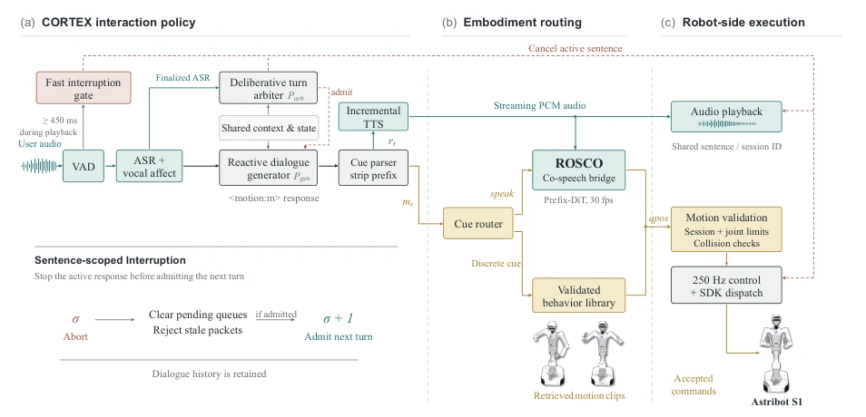
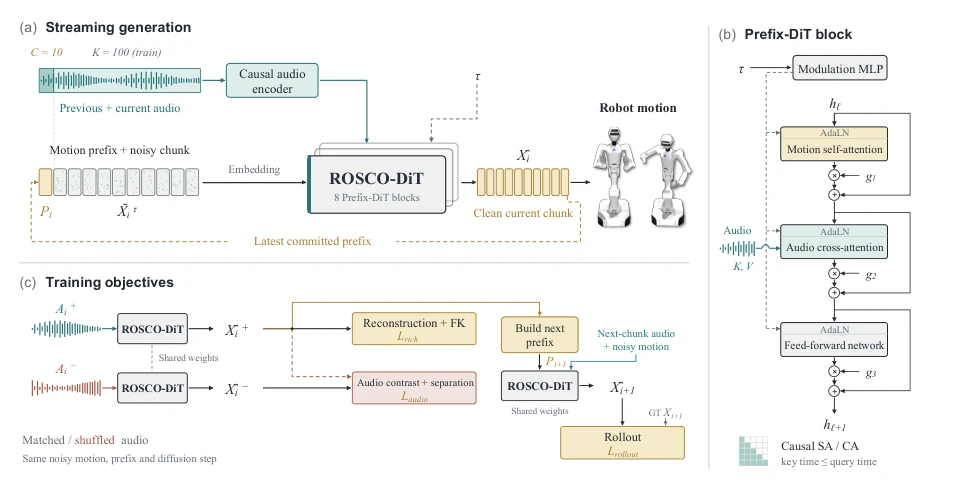
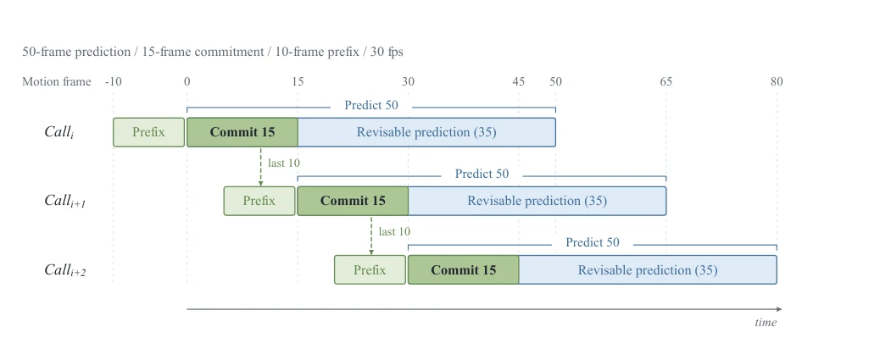
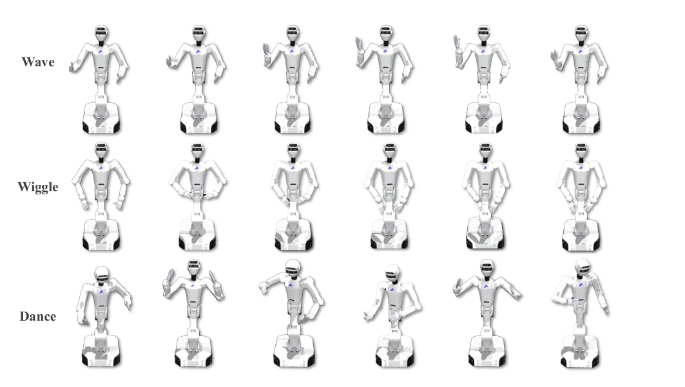

MIRA: Real-Time Full-Duplex Human-Robot Interaction for Embodied Companions
Lijian Lin, Ye Zhu, Fan Zhang, Yunfei Liu, Baofeng Li, Xianwen Zeng abspdf
论文点评Review
MIRA 试图把聊天机器人变成能动的“社牛”，这想法挺美。它没像以前那样把说话和动作分开处理，而是搞了个全双工框架。核心是 CORTEX 管脑子，ROSCO 管手脚。不过，物理世界不是虚拟世界，动作一旦发出去就难收回，所以它搞了个“预测多、承诺少”的策略。虽然听起来高大上，但实际部署在人形机器人上，延迟和安全性肯定是硬骨头。毕竟，机器人要是说话说到一半突然卡住，那画面太美不敢看。总的来说，这是一个在实时性和安全性之间走钢丝的系统，虽然没解决所有物理限制，但确实比纯离线生成靠谱多了。它通过具身 cue 接口实现了高层决策与底层控制的解耦，让机器人能更自然地打断和响应。
MIRA attempts to transform chatbots into active "social butterflies," which is an appealing idea. Instead of processing speech and actions separately as before, it implements a full-duplex framework. The core involves CORTEX managing the brain and ROSCO managing the limbs. However, the physical world is not the virtual world; once an action is issued, it is difficult to retract, so it adopts a "predict more, commit less" strategy. Although it sounds sophisticated, actual deployment on humanoid robots means latency and safety are definitely significant challenges. After all, if a robot suddenly freezes mid-speech, the resulting visual is too awkward to watch. Overall, this is a system walking a tightrope between real-time performance and safety; although it does not solve all physical constraints, it is indeed much more reliable than pure offline generation. It achieves decoupling between high-level decision-making and low-level control through an embodied cue interface, allowing the robot to interrupt and respond more naturally.
Existing embodied interaction systems mostly decouple dialogue and actions, relying on offline generated complete audio to drive actions, resulting in robots being unable to cope with streaming input and uncertain human-robot interaction boundaries [5, 31]. Although ProAct [42] combines streaming behavior generation and social reasoning, PhysDrift [18] studies generation under embodied constraints, and RoboGesture [34] generates streaming gestures on physical humanoid robots, they mainly focus on one-way intent guidance or ignore physical commitment issues. When a user suddenly interrupts (barge-in), released motions cannot be changed freely like text, leading to physically visible delayed actions or erroneous cancellations that disrupt the social experience [31]. Therefore, a unified framework is needed that coordinates dialogue decisions, discrete social behaviors, and streaming co-speech motions, while ensuring physical safety.
MIRA is divided into three main stages: CORTEX interaction policy, embodied routing, and robot-side execution. CORTEX adopts a dual time-scale strategy, detecting interruptions via a VAD fast interrupt gate (450ms), combined with a deliberative turn arbiter to decide whether to ignore, reply, or interrupt. Generated replies are accompanied by symbolic embodied cues (e.g., <speak>, <greeting>), routed to a discrete behavior library or ROSCO generator. ROSCO is a prefix-conditioned diffusion Transformer, inputting streaming audio and motion history, predicting 50 frames of action but submitting only the first 15 frames (RHPC strategy), utilizing 10 frames of overlap to maintain continuity. The robot-side execution layer checks joint limits and collisions at a 250Hz control rate to ensure physical safety. This design decouples high-level cognition from low-level control, achieving interpretability through the embodied cue interface. ROSCO uses Prefix-DiT blocks, combining causal audio encoding and motion self-attention, adding contrastive loss during training to prevent over-reliance on history. RHPC allows maintaining short physical commitments under long prediction windows, balancing context length and response speed.

Figure 1 - Real-time embodied companion interaction in MIRA. Given user speech containing linguistic content and vocal affect, CORTEX infers conversational intent and context. Responses are routed into two parallel pathways: discrete social behaviors (e.g., greeting, listening) execute pre-validated action libraries, while open-ended speaking drives ROSCO to generate streaming, speech-synchronized motion. When a user barge-in occurs (red dashed path), active speech and joint trajectories are immediately preempted and cancelled at the execution boundary, enabling safe physical halting while retaining conversational context for subsequent turn arbitration.

Figure 2 - MIRA system architecture. (a) CORTEX combines the transcript, vocal affect, dialogue history, and playback state to manage turn admission and stream responses. The cue parser separates embodiment metadata from response text before TTS. (b) Embodiment cues route motion production to ROSCO for audio-conditioned co-speech generation or to a validated behavior library for discrete actions. (c) The robot-side execution layer applies configured joint and collision checks before SDK dispatch and manages audio playback. Speech and motion share a response identity; the red dashed paths indicate cancellation requests for the active response, allowing its pending outputs to be invalidated while retaining dialogue history.

Figure 3 - Overview of ROSCO. (a) Streaming generation. ROSCO-DiT predicts a clean motion window conditioned on the preceding motion context and causal audio features. The cached rich-motion history provides the prefix for subsequent updates. (b) Prefix-DiT block. ROSCO-DiT consists of stacked Prefix-DiT blocks, each applying causal motion self-attention, causal audio cross-attention, and a feed-forward network. A modulation MLP conditioned on the diffusion timestep τ generates the AdaLN shifts and scales, together with residual gates g1, g2, and g3. (c) Training objectives. Matched and shuffled audio conditions share the same noisy motion, motion prefix, and diffusion timestep. The matched prediction is supervised by the rich-motion reconstruction objective, including kinematic consistenc

Figure 4 - Overlapping-window streaming inference. Each call predicts 50 frames but commits only the first 15. The next call advances by 15 frames, reuses the latest 10 committed frames as prefix context, and predicts an overlapping future horizon.
实验Experiments
系统在 Astribot S1 人形机器人上部署，使用 BEAT 数据集重定向训练。评估维度包括共语运动质量、流式性能和打断处理。ROSCO 在音频 - 运动对齐上达到 SOTA 水平，同时满足流式发射预算。实时部署测量显示系统能有效处理流式响应和打断，例如用户打断时能立即终止当前动作。消融实验表明 RHPC 策略在保持运动连续性的同时降低了物理承诺风险。整体证明了 MIRA 在真实机器人上的可行性，特别是在处理动态交互状态时的鲁棒性。通过对比不同基线，MIRA 在物理约束下的运动自然度上表现优异，且中断响应延迟控制在毫秒级，展示了具身交互系统的工程落地潜力。
The system is deployed on the Astribot S1 humanoid robot, using the BEAT dataset for retargeting training. Evaluation dimensions include co-speech motion quality, streaming performance, and barge-in handling. ROSCO achieves SOTA levels in audio-motion alignment while satisfying streaming emission budgets. Real-time deployment measurements show the system can effectively handle streaming responses and interruptions, such as immediately terminating current actions when a user interrupts. Ablation experiments indicate that the RHPC strategy reduces physical commitment risks while maintaining motion continuity. Overall, this demonstrates the feasibility of MIRA on real robots, especially its robustness in handling dynamic interaction states. By comparing different baselines, MIRA performs excellently in motion naturalness under physical constraints, and interrupt response latency is controlled at the millisecond level, demonstrating the engineering implementation potential of embodied interaction systems.

Figure 5 - Visualization of representative robot motions in the embodiment-cue vocabulary. Each embodiment cue is associated with multiple pre-authored motion chunks, from which one is randomly selected during interaction.